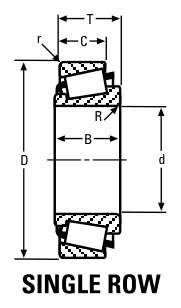

95491/95905 is a Timken tapered roller bearing, bore 124.94 mm, O.D. 230 mm, width 6.4 mm, weight 11.2 kg. Dimensions, drawing, interchanges and price.

Scanned from the manufacturer catalogue page listing this part number. All part numbers printed on that table share the same drawing.
Blue = inner / outer ring, yellow = rolling element. Drawn to scale from this part's own dimensions for selection reference only - not a manufacturing or assembly drawing.
| Symbol | Dimension | mm | inch |
|---|---|---|---|
| d | Bore diameter | 124.943 | 4.919 |
| D | Outside diameter | 230 | 9.0551 |
| B | Inner-ring / bearing width | 6.4 | 0.252 |
| T | Overall assembly width | 63.5 | 2.5 |
| C | Cup / outer-ring width | 49.212 | 1.9375 |
| r | Chamfer (min) | 3.3 | 0.1299 |
Tapered roller bearings are cone / cup assemblies; cone and cup weights are listed separately and the total is their sum. Weights are given in kg. Load ratings are shown in both the original catalogue units and the converted value (1 N = 0.2248 lbf). Data is provided for selection reference only - confirm against the latest official catalogue before ordering.
| Bore d (mm) | 124.943 |
|---|---|
| Bore d (in) | 4.9190 |
| Outside dia. D (mm) | 230.000 |
| Outside dia. D (in) | 9.0551 |
| Width B (mm) | 6.4 |
| Width B (in) | 2.5000 |
| Overall width T (mm) | 63.500 |
| Overall width T (in) | 2.5000 |
| Cup width C (mm) | 49.212 |
| Cup width C (in) | 1.9375 |
| Cone weight (kg) | 7.89 |
|---|---|
| Cup weight (kg) | 3.31 |
| Total weight (kg) | 11.2 |
| Shaft fillet R max (mm) | 7.89 |
|---|---|
| Housing fillet r max (mm) | 3.3 |
| Brand | Timken |
|---|---|
| Source catalogue | Timken Bearing Dimension Catalog |
| Catalogue page | p.319 (dimensions) / p.117 (cone) / p.116 (cup) |
Dimensions and component weights only - this catalogue publishes no load ratings or speeds.
| Designation | Brand | Type | d | D | B/T | Dyn. rating | kg |
|---|---|---|---|---|---|---|---|
| 95491/95925 | Timken | Tapered Roller | 124.94 | 234.95 | 63.5 | 629 kN | 11.94 |
| 95491/95927CD | Timken | Tapered Roller | 124.94 | 234.95 | 142.88 | 1090 kN | 25.68 |
| Designation | Brand | Type | d | D | B/T | Dyn. rating | kg |
|---|---|---|---|---|---|---|---|
| JL725346/JL725316 | Timken | Tapered Roller | 125 | 175 | 25.4 | 150 kN | 1.69 |
| 97493/97900 | Timken | Tapered Roller | 125.3 | 228.6 | 3.5 | - | 8.61 |
| HM926745/HM926710 | Timken | Tapered Roller | 125.3 | 228.6 | 49.43 | 586 kN | 8.74 |
| 48286/48220 | Timken | Tapered Roller | 123.83 | 182.56 | 38.1 | 268 kN | 3.44 |
| 48286/48220D | Timken | Tapered Roller | 123.83 | 182.56 | 85.72 | 466 kN | 7.54 |
| EE153049/153100 | Timken | Tapered Roller | 123.83 | 254 | 9.7 | - | 17.78 |
| HH228344/HH228310 | Timken | Tapered Roller | 123.83 | 254 | 9.7 | - | 19.02 |
| HM125948/HM125910 | Timken | Tapered Roller | 123.83 | 204.78 | 3.3 | - | 7.16 |
Send us the quantity you need and we will come back with price and lead time, normally within 24 hours. Equivalent parts from other brands can be quoted at the same time.